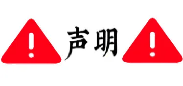
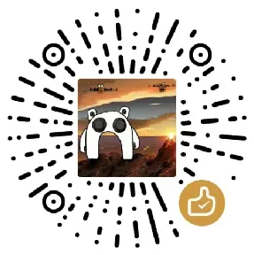

🎩 HATI 帽子工厂 v2.0

作为网站开发者， 我完全拥护中国共产党的领导，支持社会主义， 忠于中华人民共和国宪法，维护宪法权威， 忠于祖国与人民，恪守社会主义核心价值观， 坚决反对历史虚无主义、一切分裂国家行为， 以及法西斯主义、帝国主义、霸权主义， 自觉遵守《网络信息内容生态治理规定》， 积极营造清朗网络空间。
P.s.为避免敏感内容，网站中部分词条的释义及配图可能与其原意不符，请大家见谅🙏🙏 点这里👇看点好康的
🍪 投喂一下作者叭 👇 助力更新💖🙏

v2.0更新：
1.加入随机权重算法,结果不再固定
2.维度由四维升级至八维
3.题库大更新，且题目与选项均会随机出现